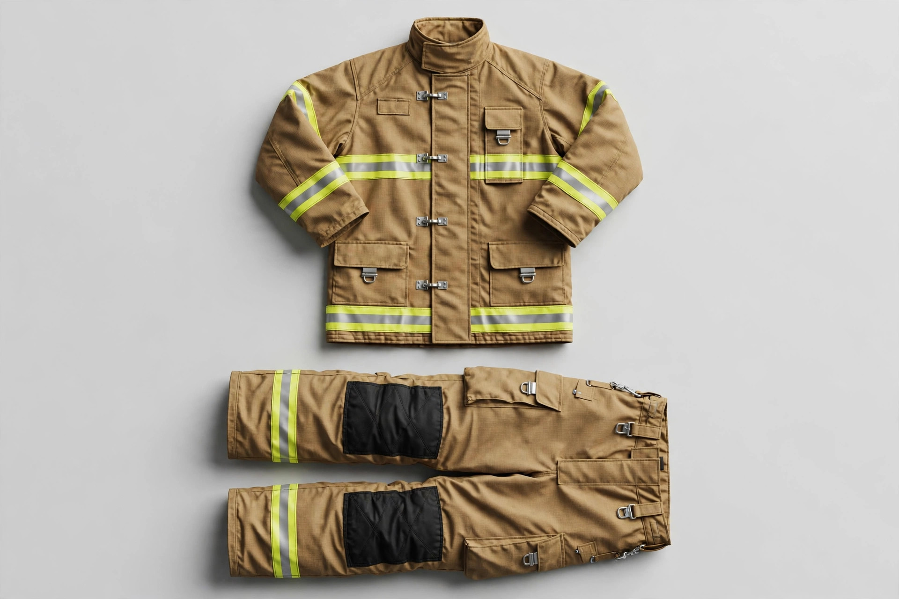

The first question most buyers ask about turnout gear is the price. It is the wrong first question, and every fire department that has ordered gear twice knows it. The right first question is which standard the gear is certified to, and whether the factory can show you the certificate. As a firefighter turnout gear manufacturer in Sialkot, Pakistan, we make turnout coats and trousers for departments that order by specification, and the difference between a good order and a bad one is almost never the price. It is the details nobody asked about until the gear was already on the truck.

Turnout gear is protective equipment, and it is only as good as the standard it was tested against. The two standards you will hear about are EN 469, the European one, and NFPA 1971, the American one. They test different things in different ways, so a suit certified to one is not automatically certified to the other. Which one your department needs is usually decided by your national or state rules, so find that out before talking to any factory.
Then ask the factory for the certificate for the exact construction it will supply, not a certificate for a different fabric, not one from five years ago, and not a brochure that claims the standard without a test report behind it. A factory that knows its product sends the certificate without a fuss. If it never arrives, or arrives for the wrong product, walk away. One thing buyers often miss: the certificate covers the whole assembly, shell and barrier and liner together, because the layers are tested as a suit, not one at a time. A price quoted without a standard attached is not a quote. It is a guess.
A turnout suit is not one garment, it is three stitched to work together, each layer with a job the others cannot do. The outer shell keeps flame, heat and abrasion off you, the moisture barrier keeps water and chemicals out while letting sweat vapour escape, and the thermal liner slows the heat getting through to your skin. Change one layer and you change the whole suit, which is why ordering by shell fabric alone is the most common mistake in turnout gear.
The shell is the layer everyone sees and the one that takes the damage. Most shells are aramid blends: a meta-aramid such as Nomex, mixed with a share of para-aramid for strength, sometimes PBI, the gold fibre departments know by sight. It does not melt. It chars, and that is the point. A ripstop weave keeps a tear from running, which matters when a coat catches on a door frame mid-call.
Colour is a department choice, not a performance one: gold and tan are the most common, black and navy exist too. A darker shell shows wear less; a lighter one shows contamination sooner, which helps at inspection after a call. Reinforcements are the other decision on the shell: knees, shoulders and cuffs drag on the ground and catch on things, so ask where they are and what they are made of. A shell with no reinforcement on the knees shows it within a season.
The moisture barrier is a PTFE membrane, a thin film laminated to a fabric backing, sewn between the shell and the liner. Its job is contradictory, and that is what makes it hard: keep water and chemicals out, yet let sweat vapour out. A barrier that is fully waterproof but does not breathe turns the suit into a sauna, and a firefighter in a sauna stops thinking clearly. One that breathes well but leaks is no barrier at all.
Ask how the barrier is made and whether the seams are sealed. A membrane with open seams leaks at the stitch holes, which is exactly where water finds its way in when you are kneeling in it. Then the liner, usually a quilted aramid blend, which should be detachable so the suit can be washed and dried properly between calls; a fixed liner dries slowly and keeps the suit out of service. None of this shows in a photograph, which is why a photograph is never enough to order from.
I check a turnout sample the way I check every sample in this factory, with my hands before my eyes. I hold the coat up by the shoulders and let it hang: a coat that twists on the hanger will twist on the wearer. I run a thumb along the inside of the moisture barrier seam, feeling for a ridge or a gap, because a seam you can feel is a seam that will leak. I fasten the hooks and dees with one hand, the way a firefighter does with gloves on. If a fastening needs two hands and a look, it is wrong. Then I put the coat on over a jumper and reach both arms up. If the hem lifts above my belt, the coat is too short or the cut is wrong. Four or five minutes, no instruments. I have sent back more samples over those five minutes than over any lab report, and the ones that pass are the ones departments reorder.
Turnout gear is worn over station wear, sometimes over a jumper in winter, and it has to move with a body reaching, lifting, kneeling and crawling. A coat that fits standing still can fail the moment the wearer kneels, so test the sample the way it will be used. Arms raised overhead, the hem should stay over the trouser waist. Kneeling, the trouser knees should not pull tight. Crawling, the coat should not ride up the back. Sleeves long enough to cover the wristlets with the arm extended.
Size by chest, waist and height, not by one letter, and grade properly across the range: a department orders every size from small to extra large in one run. Ask for the size chart with actual measurements, and measure two or three of your own crew against it before confirming. If women serve in your department, ask for a women's cut rather than a smaller men's coat: the shoulders and waist are cut differently, and a coat that is only shorter is still the wrong shape.
Lime-yellow and silver reflective trim runs in bands around the chest, the sleeves, the legs and the hem, and placement matters more than amount. Trim should be visible from every angle, including when the wearer is kneeling, when a firefighter is lowest and hardest to see. Ask where the bands sit and how wide they are, and check the trim on the sample in low light, not just under the factory ceiling.
Then the fastenings: hook-and-dee closures down the front, a zip behind them, a storm flap over the top. The front closure has to work with gloved hands, in the dark, in a hurry: a test worth doing on the sample rather than trusting a description. A radio pocket on the chest, a mic clip, a D-ring for a torch or a tool, and knitted wristlets inside the sleeve to keep heat and water out of the arm. None of these is glamorous, and all of them get used on every single call, which is exactly why they are worth checking.
A department sent us a specification that read like a shell order: aramid blend, gold, trim bands, reinforced knees. Everything about the outside of the suit, nothing about the inside. The barrier was left to us, and we chose a standard one, the safe choice on paper, and the sample passed its flame tests. The crew found the problem on a training day. The suits were heavy, they dried slowly, and after an hour of drills the firefighters were soaked from the inside. The barrier kept water out and held sweat in, and on a hot day that is the worse direction.
We remade the order with a lighter seam-sealed PTFE barrier, and the same shell suddenly behaved like a different suit. The lesson cost one order. Specify the layer you cannot see with the same care as the one you can. If your spec sheet has a line for the shell and nothing for the barrier and liner, it is not finished yet.
Turnout gear sits in our uniforms and workwear line, so a first order starts at 20 sets per style, sizes and colours mixed inside that number. Send your spec sheet, the standard, the layers, the sizes and the trim, or a photograph of the gear you wear now, and we quote exactly for that set. The sample is usually in your hands within 7–10 working days, with photographs for your approval before anything goes into bulk. Your department name, station number and rank markings go on as specified, with your own labels and a "Made in [your country]" tag on request. Every run is checked twice, in line and again before packing, and you receive final quality-check photographs before dispatch; a pre-shipment inspection can be arranged as well. For a small order, one set from the run can be sent for checking while the rest continues. Plan backwards from the date the gear is needed, allowing shipping time to North America or Europe by air or by sea, and ask for the production calendar at the quote stage: a first order always takes longer than a reorder. See the full range on our uniforms & workwear page, and our inspection services for an independent check before dispatch.
The fastest quotes we send are the ones where the first message already answers the questions we would have asked. Which standard, EN 469 or NFPA 1971. Which shell, which barrier, which liner. The sizes and how many of each. The trim placement and the markings. If you have a spec sheet, send it; if you do not, send a photograph of the gear you wear now and tell us what you want changed. As a firefighter turnout gear manufacturer in Sialkot, Pakistan, we will recommend the construction to match your standard and budget. Send it on WhatsApp at +92-339-5099397 or by email at safettech@outlook.com, and we will reply with an exact quote and a sampling plan. Or use our contact page to request a sample.

Turnout gear is the one garment in our factory where a mistake is not a returned parcel, it is a firefighter going into a building in the wrong suit. Send me your spec sheet and I will read it myself, and if something in it worries me, I will tell you before we cut a single layer.
Ahmed Zahid
Founder & Director, Safe-T TECH International · Sialkot, Pakistan
Send your spec sheet today — samples in 7–10 days, trial orders from just 20 sets per style.